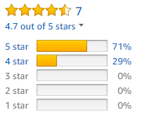

Lesson 12: Probability and Confidence Intervals
Opening Story
Lesson 12 - Opening story
(2:27 mins, L12 Opening Story Transcript)
Introduction
In the introductory video we saw Lucas, Amanda, and Craig interacting on a rather ordinary day. Notice how often they used numbers to predict or to make comparisons.
Lucas and Amanda used customer ratings to compare different headphones and predict which ones would have the best quality.
Craig used information about the number of people who interviewed to make a prediction on the likelihood that he would get the job.
Lucas, Amanda, and Craig used statistics to compare two candidates for governor and predict who might win the election.
All of us commonly use quantitative information to make informal prediction and comparisons, like those we saw Lucas, Craig, and Amanda making. In this lesson we will use probabilities, confidence intervals, and margins of error to help us make better predictions and comparisons. These topics provide us with valuable quantitative tools that can be used as part of the Quantitative Reasoning Process.
Probability
In order to make an accurate prediction or comparison we need to understand how likely it is that a certain outcome will occur.
The probability of an event is a measurement between 0 and 1 of how likely an event is to happen. An event with a probability of 0 will never happen. An event with a probability of 1 is certain to happen.
Although some events have a probability of 0 (like rolling a 7 on a standard six-sided die) or a probability of 1 (like the sun rising in the morning), most events have a probability somewhere between 0 and 1.
Because probabilities are always a number between 0 and 1, we can report these numbers as percentages. For example, we know 0.4 is the same thing as 40%. So we could say the probability of something happening is 0.4 or that there is a 40% chance it could happen.
Most of us have encountered probabilities often enough that we have a pretty good intuitive sense for what they mean. If we are told there is a 90% chance it will rain today, we know it probably will rain. However, if there is only a 10% chance of rain, we know it probably will not rain.
There are several equivalent ways to think about or explain probabilities:
- If the probability of getting a cold is 0.3, we could also say,
- there is a 30% chance you will get a cold, or
- we expect 3 out of every 10 people to get a cold, or
- out of a group of 100 people, around 30 of them will get a cold.
Informal Use of Probabilities
We commonly use probabilities in a very informal way. For example, if we are walking on a sidewalk on a winter day and see a patch of ice ahead, we subconsciously realize that the probability we will slip is higher if we walk across the ice than the probability we will slip if we walk around the patch of ice. We then adjust our path and walk around the ice rather than over it. In making that decision, we compared probabilities and assessed the risk of slipping, but we did so without even realizing we were doing it.
Informal probabilities are an important part of the assumptions we make in the Quantitative Reasoning Process. When we make an assumption, we automatically accept some risk that the assumption might not be true. The probability that the assumption is not true plays a role in the decision we make.
For example, if we are making a decision about taking out student loans and make the assumption that we will get a job paying $90,000 per year as soon as we graduate, we need to realize this assumption has a low probability of being true. Although some graduates in very high demand fields may be offered $90,000 per year upon graduation, for most graduates there is a low probability of being offered a salary that high. In 2016, the average starting salary of new bachelor’s degree holders in the United States was $50,556.1 If we base our student loan decision on the assumption that our starting salary will be $90,000 per year, we have a high risk of the assumption being false and as a consequence we could make a poor decision.
As we create assumptions, we need to informally assess the probability that they are true. Notice, in the example above we did not ever compute a probability, but by comparing our salary assumption to national data about salaries, we were able to informally conclude the the probability was low. This type of informal assessment can be done by looking at historical information, studies, surveys, and other data that helps us determine the likelihood that our assumption is true.
Decisions made using the quantitative reasoning process are only as good as our assumptions. If we make assumptions with a low probability of being true, then the probability we will make a good decision is also low.Computing Probabilities From Historical Data
One way to assess how likely it is that something will happen in the future is to look at what has happened in the past. Although there are no guarantees that what happened in the past will happen in the future, looking at past behavior gives us some sense of the likelihood of a particular outcome. Using information about the past allows us to compute probabilities.
Example 1
For the 2017 season, the National Basketball Association (NBA) player with the best free throw percentage was C.J. McCollum from the Portland Trail Blazers. McCollum made 283 of the 310 free throws he attempted during the season. Find and interpret the probability that McCollum will make the next free throw he attempts.
Solution
Based on the historical information provided, we compute the percentage of free throw shots McCollum made:
\[ \begin{align} \text{Probability of Making a Free Throw} &= \frac{\text{number of free throws made successfully}}{\text{total number of free throws attempted}}\\ &=\frac{283}{310}\\ &=0.913\\ \end{align} \]
The probability that McCollum will make his next free throw is 0.913 or 91.3%. Because this number is close to 1 or 100% it means that McCollum is very likely to make his next free throw.
L12 - Interactive 1: Example 1
(L12-1 ADA Interactive Transcript)
Here is an example where historical information was used to compute probabilities in order to make a decision using the Quantitative Reasoning Process.
Understand the Problem
Skylar owns a small convenience store. He knows most of his customers come into the store planning to make one small purchase. In order to increase his sales and his profits, he wants to encourage customers to purchase more items. He heard that where items are positioned in a store can entice customers to purchase items that they were not planning to buy. So he decides to create a plan for the arrangement of the items in his store, with the hope of increasing his sales.
Identify Variables & Assumptions
Skylar identifies the following variables:
- Number of customers
- Number of items purchased by each customer
- Total monthly sales
- Total monthly profit
He makes the following assumptions:
- Rearranging the placement of items in his store will increase the number of items each customer purchases.
- If customers purchase more items, his sales will go up.
- If his sales go up, his profits will increase.
As Skylar evaluates his assumptions he determines the second and third assumption have a very high probability of being true. However, he realizes he doesn’t have much information about the first assumption. He is basing it entirely on something he has heard, but he thinks it makes sense. So he informally determines that the first assumption had a medium probability of being true. He decides to look at historical information to get a better sense of whether that assumption is accurate.
Apply Quantitative Tools
Skylar looked back over his sales receipts for the previous month. He had 7,215 customers during the month. Many customers purchased one item, but several customers purchased 2 or 3 items. The most items purchased by a single customer at one time was 11. Using the information from his sales receipts, he made the following table showing how many customers purchased a certain number of items.
| Items Purchased | 1 | 2 | 3 | 4 | 5 | 6 | 7 | 8 | 9 | 10 | 11 |
|---|---|---|---|---|---|---|---|---|---|---|---|
| Number of Customers | 2670 | 1587 | 1010 | 505 | 289 | 216 | 361 | 144 | 215 | 145 | 73 |
Skylar realized he could use this historical information to compute probabilities.
\[
\text{Probability a customer purchases } n \text{ items}=\frac{\text{Number of customers purchasing }n\text{ items}}{\text{Total number of customers}}
\]
Using this formula, he found the following probabilities:
| Items Purchased | 1 | 2 | 3 | 4 | 5 | 6 | 7 | 8 | 9 | 10 | 11 |
|---|---|---|---|---|---|---|---|---|---|---|---|
| Probability | 0.37 | 0.22 | 0.14 | 0.07 | 0.04 | 0.03 | 0.05 | 0.02 | 0.03 | 0.02 | 0.01 |
He graphed this data using a bar chart. This visualization gave him a better sense of what was going on:
He noticed that the probability that a customer purchased 1, 2, or 3 items was \(0.37+0.22+0.14=0.73\). This meant 73% of his customers purchased 3 or fewer items. He also computed the probability that customers purchased 8 or more items: \(0.02+0.03+0.02+0.01=0.08\). Only 8% of his customers purchased 8 or more items.
Skylar carefully considered the changes he could make to the placement of items in his store. He found that the most commonly purchased item was soda. He couldn’t move the soda because it needed to be stored in refrigerators at the back of the store. But he realized the aisle that led most directly to the soda held motor oil, oil filters, and spark plugs. He realized these were not items that customers would buy on impulse. He moved those items to a less convenient aisle. He filled one side of the aisle leading to the soda with candy and gum and the other side of the aisle with donuts and other baked goods. He thought customers were likely to grab these items as they walked to the refrigerators in the back of the store.
One month after making these changes, Skylar again examined his sales receipts. Doing a similar computation to the previous month, he found the following probabilities:
| Items Purchased | 1 | 2 | 3 | 4 | 5 | 6 | 7 | 8 | 9 | 10 | 11 |
|---|---|---|---|---|---|---|---|---|---|---|---|
| Probability | 0.26 | 0.18 | 0.14 | 0.13 | 0.07 | 0.06 | 0.05 | 0.04 | 0.03 | 0.03 | 0.01 |
In order to compare, Skylar created a new side-by-side bar chart that compared the probability model before he rearranged the store to the probability model after the rearrangement.
This graph showed a lot of information, so it took careful examination in order for Skylar to really see what it was telling him. After studying the graph for awhile, he realized that the blue bars were taller than the orange bars for 1-2 items. But then for 4-7 items the orange bars were higher. Because the blue bars represented probabilities before the store was rearranged, he realized this meant that after the rearrangement the probability a customer purchases only 1 or 2 items went down, and the probability a customer purchases 4 to 7 items went up.
He verified what he saw in the graph by comparing probabilities:
| Number of Items | Probability Before Rearrangement | Probability After Rearrangement |
|---|---|---|
| 1-3 | 73% | 58% |
| 4-7 | 19% | 31% |
| 8-11 | 8% | 11% |
Make an Informed Decision
Based on these probability calculations, Skylar concluded that rearranging the store did increase the probability a customer would purchase more items. He also saw a small increase in total sales.
Skylar decided to continue to evaluate what items customers purchased as an impulse buy. He ordered several small items that might entice customers and put them in strategic locations where customers would encounter them near popular items.
Evaluate Your Reasoning
After three months, Skylar computed the list of probabilities again. He found that the probability of a customer only purchasing one item had gone back up to 0.31. Skylar realized the new candy and baked good aisle was most effective when it was new to customers. As customers become accustomed to the aisle, they stopped making as many impulse purchases. He decided to rearrange the store regularly hoping to continue to encourage customers to purchase multiple items.
He also noticed that customers could only comfortably carry about 6 or 7 items in their hands. He wondered if the reason so few customers purchased 8 or more items was because it was difficult to carry that many items. Skylar purchased some small baskets to make it convenient for customers to shop.
Sample Spaces and Probability Models
In this example, we saw how Skylar used historical data to compute probabilities and to make a decision about rearranging his store. Skylar’s example is a good illustration of some vocabulary that is commonly used when discussing probabilities.
When we compute probabilities, we often use the term event. The dictionary defined the word event as “a thing that happens.” We use probabilities to measure the likelihood that “things that happen” (events) will occur. In Skylar’s example, the “event” was a customer purchase of a certain number of items. We describe the probability for an event occurring using a sample space and a probability model.
The sample space of an event is a list of all the possible outcomes of an event.
In Skylar’s case, the sample space was the list of possible outcomes when a customer makes a purchase. They could just purchase one item, or two items, or three items, and so on. But based on historical data, no one ever purchased more than 11 items. So Skylar’s sample space was:
\[\{1,2,3,4,5,6,7,8,9,10,11\}.\]
Notice that we describe sample spaces by making a list of the possible outcomes.
A probability model for an event consists of the sample space along with the probability of each possible outcome.
The tables (and bar charts) that Skylar made represented a probability model:
| Items Purchased | 1 | 2 | 3 | 4 | 5 | 6 | 7 | 8 | 9 | 10 | 11 |
|---|---|---|---|---|---|---|---|---|---|---|---|
| Probability | 0.37 | 0.22 | 0.14 | 0.07 | 0.04 | 0.03 | 0.05 | 0.02 | 0.03 | 0.02 | 0.01 |
This table is a probability model because it lists the sample space (all the possible outcomes) and the probability of each outcome.
L12- Interactive 2: Sample Spaces and Probability Models
(L12-2 ADA Interactive Transcript)
Empirical and Theoretical Probabilities
There are two types of probabilities that we can compute: empirical and theoretical.
An empirical probability is determined by historical data or by trying the event many times and computing how often the desired outcome occurs.
A theoretical probability is determined by using your knowledge of the situation and mathematical formulas to predict how often the desired outcome will occur in the future.
Empirical probabilities are computed based on what has happened. Theoretical probabilities are computed based on what could happen. In Skylar’s case he used empirical probabilities because he based his calculations on what customers had purchased in the past.
One common example of a theoretical probability is tossing a coin. When we toss a coin there are two possible outcomes: heads and tails. Because the coin is equally likely to land on either side, we know we have a 50% chance of getting heads and a 50% chance of getting tails. This is a theoretically probability because instead of tossing a coin repeatedly and seeing what happens, we used the structure of the coin to determine the likelihood of each outcome.
When computing empirical probabilities it is important to have a very large number of trials. For example, let’s toss a coin 10 times and see what happens.
Notice we got 7 tails and 3 heads. This is not an unusual result, even for a equally weighted fair coin. However, if we used this outcome to compute an empirical probability we would say there is a 70% chance of getting tails and a 30% chance of getting heads. This isn’t even close to the theoretical probability we would expect.
In order for an empirical probability to be accurate, it must be based on a very large number of trials.
Simple, classic examples, like coins and dice can help us learn about probability.
Example 2 - Tossing a Coin
Consider an event where you toss two coins and look at whether they are heads or tails. Give the sample space and a probability model for this situation. Determine if you used theoretical or empirical probabilities.
Solution
When we toss the two coins we can represent the possible outcomes with the following tree diagram:
Sample Space:
The sample space of this event is a list of all possible outcomes. Looking at our tree diagram, the four branches of the tree tell us the possible outcomes. If we use H for heads and T for tails, we could write the sample space as:
\[ S =\{\text{HH},\text{HT},\text{TH},\text{TT}\}.\]
Probability Model:
Since there are four possible outcomes that are each equally likely to occur, we assign them each a probability of 1 out of 4, or \(\frac{1}{4}=0.25\). The probability model could be represented by the following table:
| Possible Outcome | HH | HT | TH | TT |
|---|---|---|---|---|
| Probabilities | 0.25 | 0.25 | 0.25 | 0.25 |
What type of probability:
The probabilities in our probability model are theoretical probabilities because we computed them based on our understanding of what could occur when we toss a coin twice.Example 3 - Rolling Dice
Consider an event where you roll a pair of dice and observe the sum of the numbers on the two dice. Give the sample space and a probability model for this situation. Describe the difference between an empirical and a theoretical probability in this situation.
Solution
When we toss the two dice and add the numbers on the dice, we can represent what could happen with the following chart:

Sample Space:
The sample space of this event is a list of all possible outcomes. Looking at our chart we can see that the sum of the dice can be anything between 2 and 12. We can write the sample space as:
\[ S =\{2,3,4,5,6,7,8,9,10,11,12\}.\]
Probability Model:
There are 36 possible outcomes that are each equally likely to occur. Because they are equally likely, we can count how many times each sum occurs to build our probability model.
| Possible Outcome | 2 | 3 | 4 | 5 | 6 | 7 | 8 | 9 | 10 | 11 | 12 |
|---|---|---|---|---|---|---|---|---|---|---|---|
| Probabilities | \(\frac{1}{36}\) | \(\frac{2}{36}\) | \(\frac{3}{36}\) | \(\frac{4}{36}\) | \(\frac{5}{36}\) | \(\frac{6}{36}\) | \(\frac{5}{36}\) | \(\frac{4}{36}\) | \(\frac{3}{36}\) | \(\frac{2}{36}\) | \(\frac{1}{36}\) |
We can also write the probabilities as decimals instead of fractions. This gives us the same probability model represented in a slightly different way.
| Possible Outcome | 2 | 3 | 4 | 5 | 6 | 7 | 8 | 9 | 10 | 11 | 12 |
|---|---|---|---|---|---|---|---|---|---|---|---|
| Probabilities | 0.028 | 0.056 | 0.083 | 0.111 | 0.139 | 0.167 | 0.139 | 0.111 | 0.083 | 0.056 | 0.028 |
From this chart, we see the most likely outcome is a sum of 7 which occurs 16.7% of the time. The least likely outcomes are 2 and 12, which each occur only 2.78% of the time.
What type of probability?:
The probabilities in our probability model are theoretical probabilities because we computed them based on our understanding of what could occur when we toss two dice.
Customer Ratings
When we looked at empirical probabilities we saw the importance of basing our probabilities on a large number of trials. Let’s return to the example of customer ratings given in the introductory video. Lucas and Amanda were shopping for headphones for a birthday gift. They used customer ratings to compare between different pairs of headphones. Many people look at customer ratings when they make a purchase online. These ratings allow us to look at information provided by a large number of previous customers and use that information to make a decision about what to purchase. These ratings are a type of empirical probability based on historical data.
Lucas and Amanda were looking at ratings similar to the one shown above. Notice that 71% of the customers rated Item #1 with 5 stars. But there is variability in the ratings. Not everyone had the same opinion about this item. Some people gave it a 5 star rating, while other people gave it a 1 star rating. There is a big difference between 1 star and 5 star ratings. Because the most common rating was 5 stars, we probably trust the five star rating most. In this example, 71% is an empirical probability based on asking 2798 people their opinion of the item.
Compare the customer ratings for Item #1 shown above with the rating for Item #2 shown below.

Notice that the both items have 71% of individuals giving a 5-star rating. However, we would be less confident in the rating given for Item #2. The first item was rated by 2,798 people while the second item was only rated by 7 people. We can trust information more when it is confirmed by large number of people with the same opinion.
This example shows that we can’t just look at the percentage of people who gave a 5-star rating. We also need to consider variability in the ratings and the number of people who gave a rating. This is important anytime we look at statistics. We can take variability and the number of trials into account by using a margin of error.
Estimating with Confidence
In the introductory video we heard Craig, Lucas, and Amanda having a conversation about a political poll. A news report stated that 51% of the voters were going to vote for Andrews. But this percentage was based on a sample. The news agency had not contacted all registered voters and asked them how they planned to vote. They only contacted some of them. The news agency knew the answer based on their sample could be different from the true percentage for all the registered voters, the entire population. So in addition to giving the percentage of voters planning to vote for Andrews, the news report also gave a margin of error.
Statisticians distinguish between two types of numbers: “parameters” and “statistics”.
A parameter is a number based on a survey of the entire population.
A statistic is a number based on a survey of just a sample of the population.
The percentage reported in the news “51% of voters” is an example of a statistic. It is based on a sample of the population, so it is a statistic rather than a parameter. Statistics are used because it is difficult, time consuming, and expensive to contact every individual in a large population. Instead, just a sample of the population is contacted. We assume that the value of a statistic is not exactly equal to the true percentage (parameter) from the population. This where the margin of error comes in.
In the introductory video Lucas said the margin of error for the voter study was 3%. By first subtracting the margin of error from the percentage found in the sample, then adding the margin of error to the percentage found in the sample, we obtain an interval that we can be quite confident includes the true percentage (the parameter) for the whole population. We call this interval of numbers a confidence interval.Statistics are used to estimate the true percentage (the parameter) for the whole population. The margin of error helps us measure how far our statistic might be from the true percentage (the parameter).
95% Confidence Intervals
News organizations and polling companies often report a statistic along with the margin of error. We can use this information to find the confidence interval.
\[ \text{confidence interval} = \text{the statistic } \pm \text{ the margin of error} \]
Use this formula to find the confidence of intervals for the political poll in the introductory video.
L12 - Interactive 3: 95% Confidence Intervals
(L12-3 ADA Interactive Transcript)
When reading this type of news report, it is important to realize that the percentage provided is a statistic, not the true percentage for the whole population (not the parameter). The following examples demonstrate how to convert a published statistic and margin of error into a confidence interval.
Example 4 - Grocery Bags
A Gallup poll2 conducted the week of March 1-5, 2017 asked individuals: “Which of these does LESS harm to the environment: using paper shopping bags or using plastic shopping bags?”
Give a 95% confidence interval for the percentage of U.S. adults who believe paper bags are better for the environment than plastic bags. Interpret the meaning of the confidence interval.
Solution
Gallup reported that they asked this question to 1018 U.S. adults, age 18 and older and 73% said paper shopping bags were less harmful to the environment.
The 73% number is a statistic because it was computed by talking to a sample of adults living in the United States (if Gallup had asked all adults in the U.S. this question, then the number would be a parameter). Gallup stated: “The margin of sampling error is 4 percentage points at the 95% confidence level.”
We can use this margin of error to compute the 95% confidence interval:
\[ \begin{align} \text{confidence interval} &= \text{the statistic } \pm \text{ the margin of error}\\ &= 73\% \pm 4\%\\ &= (73\%-4\%, 73\%+4\%)\\ &= (69\%, 77\%)\\ \end{align} \]
This shows our 95% confidence interval is \((69\%, 77\%)\). This means we are 95% certain that the true percentage of adults in the United States who think using paper grocery bags is better for the environment than using plastic grocery bags is between 69% and 77%
Example 5 - Bathroom Cleanliness
The Bradley Corporation conducted a study3 on customers views of the connection between bathroom cleanliness in a business and the quality of the business’ products and services. Based on a sample of 1042 American adults, they found “that 88% [of American adults] believe that if a restaurant has unclean restrooms, the likelihood is that the kitchen is also unclean”. The margin of error in the study was 3%.
Find a 95% confidence interval for the percentage of Americans who believe there is a connection between the cleanliness of a bathroom and a kitchen in a restaurant. Interpret the meaning of the confidence interval.
Solution
The 88% number reported by the Bradley Corporation is a statistic because it was computed by talking to a sample of American adults (if they had asked all American adults this question, then their number would be a parameter).
We can use the margin of error to compute a 95% confidence interval:
\[ \begin{align} \text{confidence interval} &= \text{the statistic } \pm \text{ the margin of error}\\ &= 88\% \pm 3\%\\ &= (88\%-3\%, 88\%+3\%)\\ &= (85\%, 91\%)\\ \end{align} \]
This shows our 95% confidence interval is \((85\%, 91\%)\). This means we are 95% certain that the true percentage of American adults who think there is a connection between the cleanliness of a bathroom and a kitchen in a restaurant is between 85% and 91%. This provides good statistical evidence that unclean restrooms can give a negative message about a restaurant.
Example 6 - Technology Use
In 2016, the Pew Research Center conducted a study on the use of technology by U.S. adults age 65 and older.4 They found that 42% of adults 65 and older own a smartphone. This is a significant increase from the results of a similar study conducted in 2011 that found that only 11% of adults 65 and older owned a smartphone. The margin of error in the 2016 study was 4.1%.
Find a 95% confidence interval for the percentage of U.S. adults age 65 and older who own a smartphone. Interpret the meaning of the confidence interval.
Solution
The 42% number reported by the Pew study is a statistic because it was computed by talking to a sample of U.S. adults age 65 and older (if they had asked all U.S. adults age 65 and older this question, then the number would be a parameter).
We can use the margin of error to compute a 95% confidence interval:
\[ \begin{align} \text{confidence interval} &= \text{the statistic } \pm \text{ the margin of error}\\ &= 42\% \pm 4.1\%\\ &= (42\%-4.1\%, 42\%+4.1\%)\\ &= (37.9\%, 46.1\%)\\ \end{align} \]
The 95% confidence interval is \((37.9\%, 46.1\%)\). This means we are 95% certain that the true percentage of U.S. adults age 65 and older who own a smartphone is between 37.9% and 46.1%. Because this interval is higher than the data from the 2011 survey conducted 5 years prior to this study, we know that smartphone use among older Americans is increasing. However, this interval shows that still fewer than half of older Americans own a smartphone.
Computing 95% Confidence Intervals
In the previous examples we were given the margin of error so we could use it to find the confidence interval. But what if we are not given a margin of error?
The formula we will use in this class is a simplified version of the formula used by statisticians, but it gives a good approximation and will help us gain a better understanding of confidence intervals and margin of error.
To estimate the percentage of a population with a certain characteristic based on a sample, we use the following formula. The variable \(x\) represents the number of people in the sample with the characteristic and the variable \(n\) represents the total number of people in the sample: \[ \text{Confidence Interval} = \frac{x}{n}\pm \frac{1}{\sqrt{n}} \]
The following examples show how to use this formula to compute a confidence interval.
Example 7 - Election Results
A school district is holding a special election to pass a school bond. The purpose of the bond is to raise construction funds to pay for a new elementary school. The bond would be paid for by collecting additional property taxes over the next 10 years.
To assess support for the bond, the local newspaper asks a sample of 200 registered voters how they plan to vote on the bond. Seventy-two of those in the sample indicate that they plan to vote in favor of the bond. Find and interpret a 95% confidence interval for this situation.
Solution
The sample was of 200 registered voters so \(n=200\).
Seventy-two people said they would vote in favor of the bond so \(x=72\).
Using the confidence interval formula we get: \[
\begin{align}
\text{Confidence Interval} &= \frac{x}{n}\pm\frac{1}{\sqrt{n}}\\
&= \frac{72}{200}\pm\frac{1}{\sqrt{200}}\\
&= 0.36\pm0.07\\
&= (0.36-0.07, 0.36+0.07)\\
&= (0.29, 0.43)\\
\end{align}
\]
This confidence interval tells us we are 95% certain that the true percentage of voters who will vote in favor of the bond is between 29% and 43%. From this sample, it appears that the bond will fail to be approved.
Example 8 - Potential Customers
Lisa and Conner are a married couple who want to start a new restaurant in Rexburg. To determine if their restaurant would be successful, they decide to conduct a survey to see what percentage of Rexburg residents would visit their restaurant at least once a month.
They surveyed 110 Rexburg residents and 27 of them indicated they would visit the new restaurant at least once per month. Find and interpret a 95% confidence interval for this situation.
Solution:
The sample was 110 potential customers so \(n=110\).
Twenty-seven people said they would visit at least once per month so \(x=27\).
Using the confidence interval formula we get: \[
\begin{align}
\text{Confidence Interval} &= \frac{x}{n}\pm\frac{1}{\sqrt{n}}\\
&= \frac{27}{110}\pm\frac{1}{\sqrt{110}}\\
&= 0.245\pm 0.095\\
&= (0.245-0.095, 0.245+0.095)\\
&= (0.15, 0.34)\\
\end{align}
\]
This confidence interval tells us we are 95% certain that the true percentage of Rexburg residents who will visit the new restaurant at least once per month is between 15% and 34%. The confidence interval gives Lisa and Conner an estimate of how many monthly customers to expect.
Sample Size and Margin of Error
The margin of error is used to give us a better understanding of how close we expect a statistic to be to the true percentage (parameter) it is designed to estimate.
If you have a very large margin of error, it is easy to make an accurate prediction. For example, without even doing any mathematical calculations it is easy to predict that the percentage of BYU-Idaho students who are from Idaho is between 0% and 100%.
Here is another example from a Garfield cartoon 5:
In order to be useful, confidence intervals need to be narrow, which means the margin of error needs to be small. One way to shrink the margin of error is to increase the sample size. Notice that the \(\frac{1}{\sqrt{n}}\) in the 95% confidence interval formula tells us the margin of error. Let’s compute the margin of error for several different sample sizes:
| Sample Size (\(n\)) | Margin of Error (\(\frac{1}{\sqrt{n}}\)) |
|---|---|
| 10 | 32 percentage points |
| 100 | 10 percentage points |
| 500 | 4.5 percentage points |
| 1000 | 3.1 percentage points |
| 5000 | 1.4 percentage points |
Notice that the bigger the sample size, the smaller the margin of error. This makes sense because the more individuals you survey, the better sense you have for what is going on in the population. Although collecting data from a larger sample improves the margin of error, it also makes the survey more expensive and time consuming to complete. When designing a survey we have to balance the need to sample enough people to adequately reduce the margin of error while still keeping the size of the sample manageable.
L12 - Interactive 4: Sample Size and Margin of Error
(L12-4 ADA Interactive Transcript)
Comparing Confidence Intervals
In the introductory video, we heard Craig explain to Lucas and Amanda why the margin of error mattered in a political poll. The follow explanation expands on that example.
L12 - Interactive 5: Comparing Confidence Intervals
(L12-5 ADA Interactive Transcript)
From this example, we see that when two statistics are close to one another, we might not have enough evidence to say the true values for the population (the parameters) are different from one another.
Here is anther example:
Example 8 - Well-being and Student Loans
The Gallup Poll organization conducted a poll6 to determine the long-term effects of student loans on the well-being of college graduates. They based their information on a survey of 29,560 college graduates who graduated between 1990 and 2014. Gallup stated the study had a margin of error of 1.4% at the 95% confidence level.
Based on the results of their study, Gallup compared the well-being of graduates in five areas: purpose, social, financial, community, and physical. The following chart gives the percentage of graduates who were “thriving” in each of these five areas based on the amount of student loan debt they had at the time of graduation.

Use the above information to answer the following questions:
- Is there a statistical difference between the percentage of graduates with no student loan debt who are thriving financially and the percentage of graduates with over $50,000 in student loan debt who are thriving financially? Explain.
- Is there a statistical difference between the percentage of graduates with no student loan debt who are thriving socially and the percentage of graduates with over $50,000 in student loan debt who are thriving socially? Explain.
Part A: Financial Well-being
Solution
No Student Loan Debt
Among graduates in the survey with no student loan debt, 40% were thriving financially. Because we know the margin of error was 1.4%, we can find the confidence interval:
\[ \begin{align} \text{confidence interval} &= 40\% \pm 1.4\% \\ &=(40-1.4, 40+1.4)\\ &=(38.6, 41.4)\\ \end{align} \]
We are 95% confident that the true percentage of graduates with not student loan debt who are thriving financially is between 38.6% and 41.4%.
Over $50,000 in Student Loan Debt
Among graduates in the survey with over $50,000 in student loan debt, 25% were thriving financially. Because the margin of error was 1.4%, we can find the confidence interval:
\[ \begin{align} \text{confidence interval} &= 25\% \pm 1.4\% \\ &=(25-1.4, 25+1.4)\\ &=(23.6, 26.4)\\ \end{align} \]
We are 95% confident that the true percentage of graduates with over $50,000 in student loan debt who are thriving financially is between 23.6% and 26.4%.
Is there a difference?
Let’s graph these intervals on a number line:
Because these two confidence intervals do not overlap, there is enough statistical evidence to conclude that the percentage of students who are thriving financially is greater among students with no student loan debt than it is among students with over $50,000 in student loan debt.
As these examples show, we have to be careful when comparing statistics obtained from a sample. It is easy to mistakenly conclude that because one statistic is larger than another statistic, the corresponding parameter is also larger than the other parameter. If the confidence intervals overlap, we do not have enough statistical evidence to say the parameters are different from one another.
L12 - Interactive 6: Well-being and Student Loans
(L12-6 ADA Interactive Transcript)
Lesson Checklist
By the end of this lesson, you should be able to:
- Define probability.
- For a given event, give the sample space of the event.
- For a given event, give a probability model for the event.
- Explain the difference between empirical and theoretical probabilities.
- Create a 95% confidence interval for the percentage of individuals in a population who have a particular characteristic.
- Interpret a confidence interval.
- Determine whether two confidence intervals overlap and make an appropriate conclusion.
http://time.com/money/collection-post/3829776/heres-what-the-average-grad-makes-right-out-of-college/↩︎
http://www.gallup.com/poll/207503/americans-say-paper-bags-eco-friendly-plastic.aspx↩︎
https://www.bradleycorp.com/handwashing/2017handwashingsurvey↩︎
http://www.pewinternet.org/2017/05/17/tech-adoption-climbs-among-older-adults/↩︎
https://garfield.com/comic Published 12 March 1999.↩︎
http://www.gallup.com/poll/174317/student-debt-linked-worse-health-less-wealth.aspx↩︎